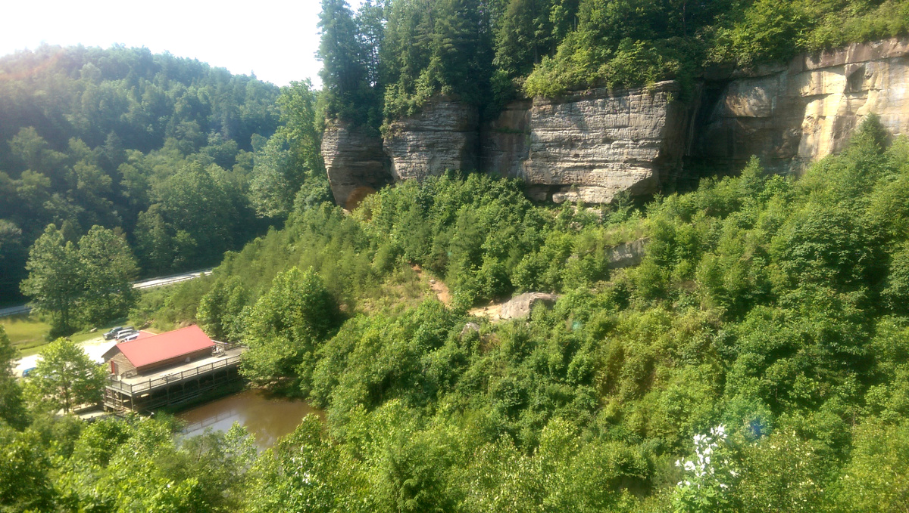
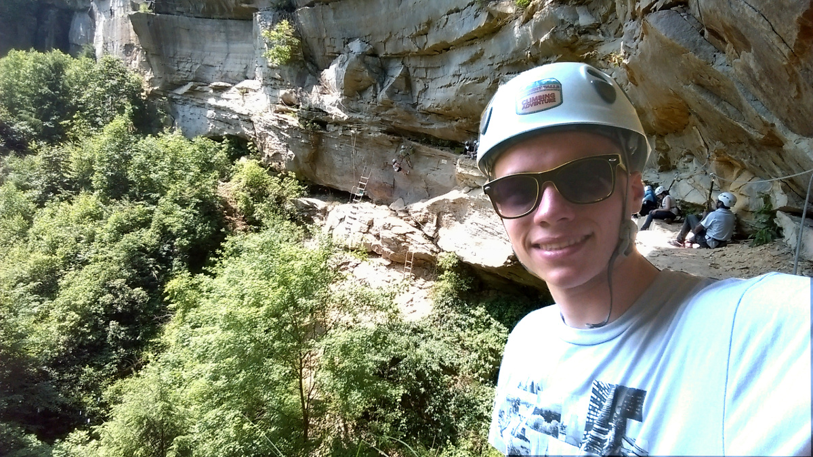
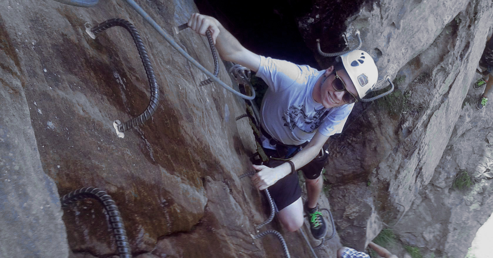
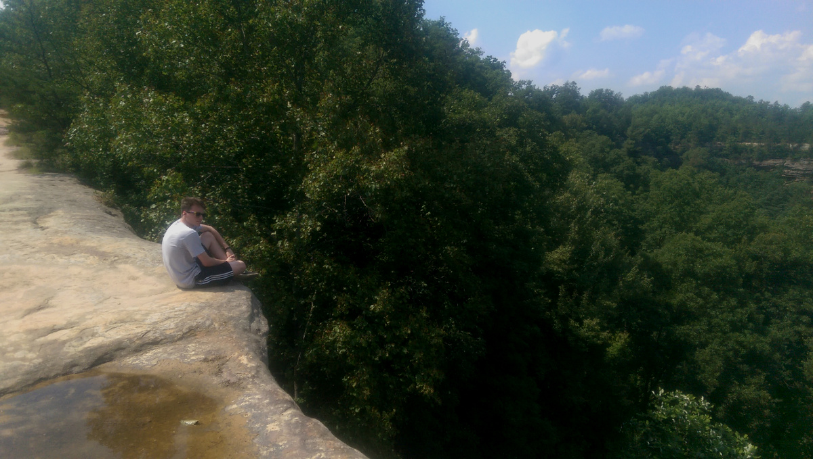
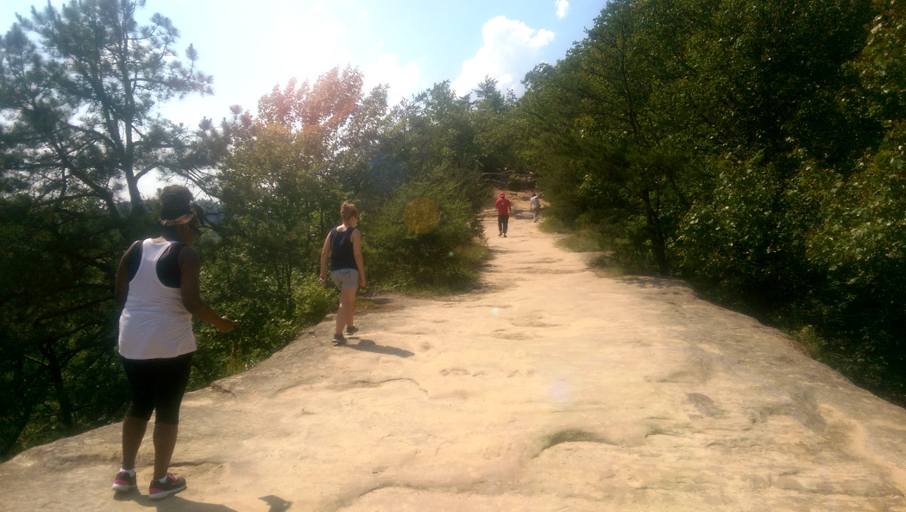

Day 1
We began the week by hearing from the teams that traveled to Beattyville for the River Festival and those who went to Morehead to the Trail Festival over the weekend. From what was presented it seems that Beattyville (the place I traveled to in Lee County) was an up and coming town trying to capitalize on its natural resources. It was a very pathetic festival compared to the reports from those who went to Morehead. Moorehead seemed to to have the social media aspect of their event together as they were promoting the use of the hashtag “#More2Morehead” through signs and stickers.
We took a moment to debrief Professor Hackbert of our time spent with the transamerican bikers last week. We revealed our discoveries concerning what they thought of the various towns they have traveled through and their lifestyle choices along their journey. Hackbert was pleased that we were able to ascertain spending habits and actual numerical figures from them.
We then discussed our “36 Hours in Berea” presentations within our team and each team elected a representative to present their presentation to the class. After hearing four presentations, we were each required to use our individual presentations and create a video voiceover to be placed on YouTube so that local business owners could be directed to the video presentation to see how their businesses are view through various tourist personas. My YouTube presentation is embedded below. I am ashamed of the horrible sound quality and scriptless voiceover but we had an hour to record, edit and submit these.
Day 2
Still thumbing through all the work we did over the weekend, we presented the results of doing the Opportunity Discovery Canvas to our teammates. We got to see how the others in our team evolved their idea and learned along the way. After hearing from everyone, we voted on our favorites to present to the class. We heard from Minashsha, who advocated for disposable wet wipes to be available in bathroom stalls, Dustin, who presented an idea for a Roomba for mowing lawns, and Adriana, who was pitching for a “Uber for pedestrians” to keep safe at night.
Afterwards, Hackbert introduced the One Page Proposal. A template and process for making a proposal in an effective, concise and executable manner. We were also introduced to the Business Model Canvas and saw some real world applications of the canvas. Finally, we contacted the Berea business owners that were featured in out “36 Hours in Berea” presentations via posting a link to our YouTube presentation on their business’ Facebook page.
Day 3
We explored the Business Model Canvas some more by drafting models for existing companies. We heard from Clara and Ishwar who are two members of our cohort who won third place for business model in the Kentucky statewide “Idea State U” competition. Their business model was for “EcoClean”, a franchisable, B-Corp, and environmentally friendly laundromat. Ishwar and Clara read their full pitch out loud to us and we used their information to build a canvas for their business.
Hackbert introduced us to a useful spreadsheet template for organizing an event. We got practice with using the template by organizing an assigned EPG-related event. This Action Plan/Event Scheduling template will likely be useful during our time in EPG and certainly beyond.
Finally, we walked to Berea City Hall to observe the final pitch to the Berea Tourism Commission to send off Berea’s Trail Town Application to the state. The motion to sign off and send the application was accepted and we celebrated our efforts over ice cream at the Berea Fudge Shoppe.
Day 4
Today we were to experience a new level of “extreme” adventure tourism; today we were rockclimbing. We left campus at 7AM and stopped for breakfast at McDonalds. We traveled through the Red River Gorge to arrive at Torrent Falls Rock Climbing. After suiting up and enduring a 45 minute instructional and training session which included scaling a ground level practice course, we were free to begin climbing the enormous crescent cliff face. The cliff was divided into six sections, sections 1 and 2 were beginner courses, section 3 intermediate, section 4 and 5 advanced, and the 6th section was infamously known as “The Black Diamond” and was the section where the most falls have occurred (falls with safety equipment keeping the climber safe, of course).
Each section could be completed individually or together. I, plus a few others, chose to start at section 1 and see how far we could go. A group of others ruched directly to sections 2 and 3 to begin their climb. We were climbing along fine with the assistance of several conveniently placed rebar rungs.
 View of the Torrent Falls Building from about the halfway point.After section 3, we lost most of the initial group that started at section 1. They had given up from exhaustion, thirst or lack of confidence to proceed. Section 4 was all upper body strength and wore us out, Causing everyone else who started from the beginning, except for A.D. (a student/basketball player mind you) and I, to get off just before section 5 to take a break. Section 5 wasn't too bad but there was some serious congestion caused by other climbers getting stuck and fatigued midway through. This caused us to have to struggle to find a place to rest while we waited.
 Selfie!After section five we were pumped and ready to take on The Black Diamond. It was difficult to gauge the Diamond because it curved around out of sight from where we were so we gauged the few who had already completed it by yelling to them on the ground. They informed us that the beginning of the Diamond was difficult due to lack of foot rests and that it was largely upper body strength and it was also difficult to clip safety harness while holding on the the bars.
We were stuck waiting a while at the end of section 5 because there was a girl who had fatigued her arms and was not able to get a good enough grip to continue. We patiently waited and I made conversation with another climber who was waiting behind me named Floyd. He was on vacation from Cleveland, OH with his family. He said they travel to Kentucky once a year to participate in outdoor activities and let his children enjoy the outdoors.
After resting up and also losing that adrenaline, we began the final stretch, The Black Diamond. At about the same place that the girl got stuck, I too was facing difficulties. I knew if I held on too long I would lose strength and fall so my strategy was to go quickly and powerfully through the hard parts. While this strategy was effective, it made it so I was moving too quickly to secure a good foot rest and often found myself hopping instead of stepping from foot rest to foot rest. This was undoubtedly the first and only time during the whole climb that I felt I could actually fall. After that turn the rest of the climb was a lazy descend to the sweet, sweet ground.
We all gathered to the outfitter’s shop and waited for the remaining climbers to return. One girl from Kenya did the whole course twice! Once we all returned, Hackbert offered to buy those who completed the course a t-shirt from the gift shop reading “I survived The Black Diamond”. I passed on the shirt cause I knew I would never wear it.
 Enjoying the viewWe were all famished so we drove shortly down the road to Miguel’s Pizza for lunch. After Lunch we drove to the Natural Bridge State Park to hike the trail to the Natural Bridge and perform some intercept interviews with hikers along the trail. The Natural Bridge was amazing. A weathered rock formation making a near perfect bridge that had several trees and vegetation growing on it. Perhaps, the best part was being able to walk on the bridge and see the view.
 Walking on the Natural BridgeOn the way back to Berea we stopped for some Japanese food at Sakura Express in Winchester, KY.
Day 5
Friday was mostly devoted to discussing yesterday and drafting a cover letter and assembling an informative packet to be sent to county leaders of counties in Eastern Kentucky that we are interested in working with for the remainder of our time in EPG. My team was assigned Knott and Breathitt County to work with.
We will wait to hear back from the county leaders that we contacted and depending on their response we will split up in teams and work with them to help them capitalize on their natural and cultural assets using the techniques and lessons that we have learned so far.